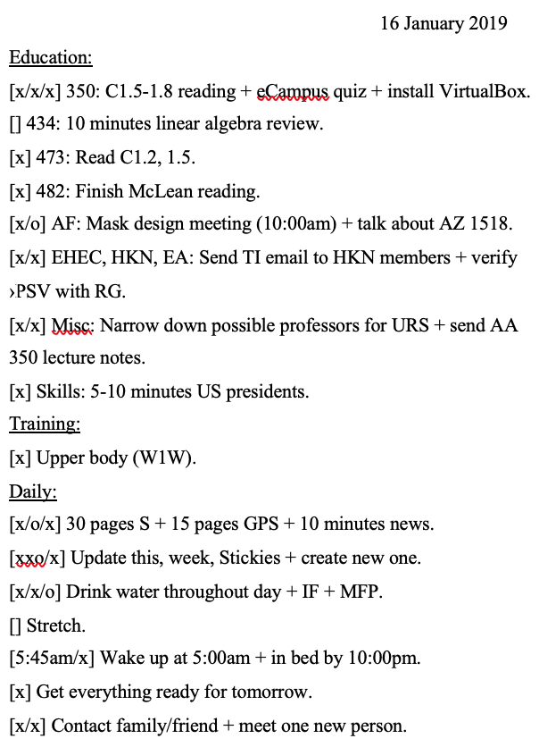

Using small tasks to accelerate discipline.
The Law of Discipline Momentum states that:
Completing easier tasks builds momentum, allowing more challenging tasks to be accomplished more easily.
I first took note of it a few years ago as I was staring down the abyss of a long to-do list: I had homework, projects, studying, work, exercise, and personal things I needed to get done, but only so many hours in the day to do so. What to start first?
Some might suggest eating the frog, or doing the least pleasurable or most important (depending on who you ask) task first. But this was daunting—the most important task that day was a final project I hadn't started, nor had any clue even how to start.
Others might suggest starting at the top and going straight down the list in sequential order. But this was daunting and uncomfortable, too—some of the first tasks were long and/or boring, something I wasn't interested in starting my day off with.
I eventually settled on doing the minimum effort tasks, which included reviewing my Anki decks, reviewing some course material for 20 minutes, and sending some short emails, among others. As Xs filled the to-do list's boxes, the final project didn't seem so bad, nor did the boring chapter readings and tedious homeworks.
This idea is akin to McRaven's urging to make your bed, which he discusses in his University of Texas at Austin 2014 commencement address:
Every morning in basic SEAL training, my instructors, who at the time were all Vietnam veterans, would show up in my barracks room and the first thing they would inspect was your bed. If you did it right, the corners would be square, the covers pulled tight, the pillow centered just under the headboard and the extra blanket folded neatly at the foot of the rack — that’s Navy talk for bed.
It was a simple task — mundane at best. But every morning we were required to make our bed to perfection. It seemed a little ridiculous at the time, particularly in light of the fact that were aspiring to be real warriors, tough battle-hardened SEALs, but the wisdom of this simple act has been proven to me many times over.
If you make your bed every morning you will have accomplished the first task of the day. It will give you a small sense of pride, and it will encourage you to do another task and another and another. By the end of the day, that one task completed will have turned into many tasks completed. Making your bed will also reinforce the fact that little things in life matter. If you can’t do the little things right, you will never do the big things right.
A to-do list—mental or physical—is required. Write down all tasks that need to be done for the day. Start with the easiest, most straightforward task there is and mark it off the list. Move onto the next easiest, and so on. If having trouble getting started at all, find an even easier task that can be marked as complete, even if it's an everyday chore or similar. Examples include putting up the dishes, brushing teeth, etc.
The sense of accomplishment from a task—significant or not—produces motivation to continue on with the remaining tasks, creating a positive feedback loop almost immediately after the first task is complete. In my experience, the positive feedback grows superlinearly, only being constrained by time, energy, and ability, the latter two of which are controllable. Energy can be replenished via food and rest, and ability improves with consistent practice and learning.